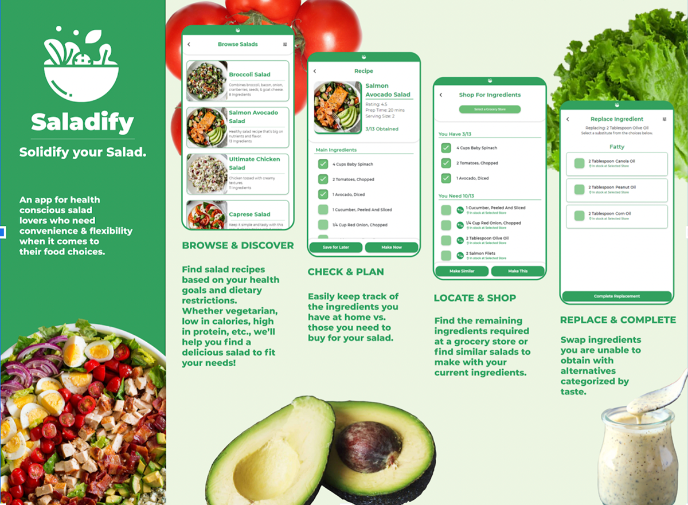
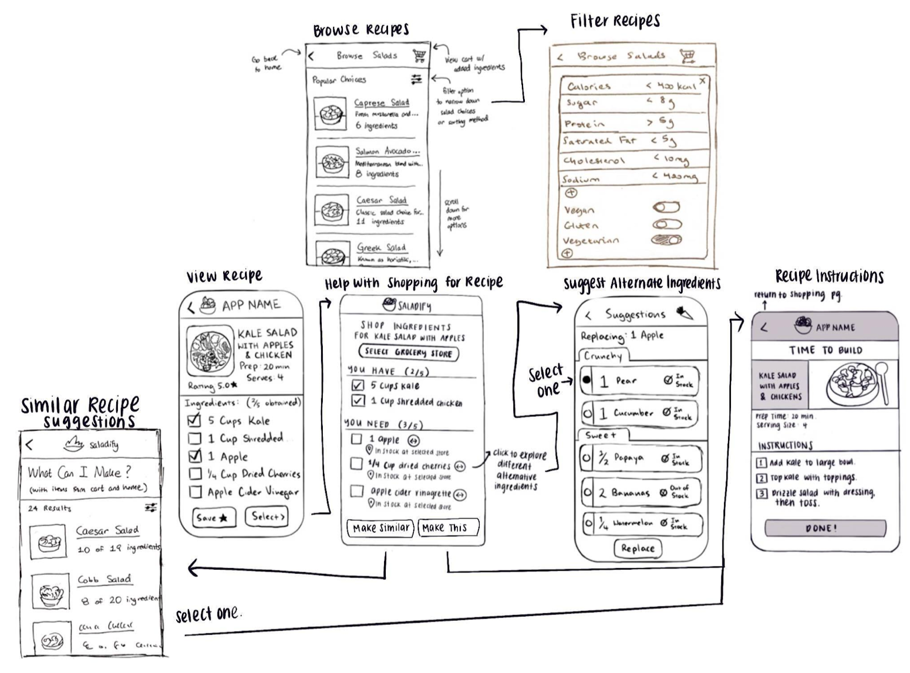

Saladify
For a UC Berkeley UI Design & Development course, I was tasked with designing a product that can achieve deconstruction and reconstruction. I designed a front-end mobile application for users who prioritize convenience & flexibility when planning, prepping, and cooking salad recipes.
Languages: Python, HTML, CSS, Bootstrap, JavaScript, jQuery, React.js, and Django
Technologies: Figma
Outline:
The project theme is deconstruction & reconstruction.
To deconstruct is to dismantle, break apart, or reduce something to its constituent parts in order to reinterpret it. Through the process of deconstruction, you can expose hidden internal assumptions and contradictions, uncover and unconceal embedded mechanisms, and bring out into the open what has previously been left to the imagination.
But, deconstruction can be isolating, harsh, and debilitating. When an idea, concept, or thing is deconstructed, its fragments can be left broken or can be pieced together. The deconstructed parts of a whole are open to reinterpretation.
To reconstruct is to form an impression, model, or reenactment of a past event or thing from the available parts or evidence. The process of reconstruction involves building, forming, or reorganizing something again after it has been broken down.
Our lives are embedded in “constructions.” In this project, I was tasked with picking one to deconstruct (dismantle, break apart, or reduce to its constituent parts) and reconstruct (build back, reform, or reorganize).
Presenting Saladify, a salad recipe mobile application.
Saladify is an application designed for salad lovers who enjoy exploring new recipes that support their healthy, balanced lifestyle. But, these users also prioritize variety, convenience, and flexibility in their exploratory cooking habits.
1. Variety
To support our target user group, users can browse from a variety of salad recipe options on Saladify. Users can also conveniently filter their recipe options based on their health goals and dietary restrictions. For instance, users can find recipes that fit their calorie, sugar, sodium, and protein intake goals as well as any diet(s) they choose to follow.
2. Convenience
Once the user selects a recipe to explore, Saladify breaks down each recipe’s ingredients list to support the user’s food preparation and grocery shopping experiences. Specifically with Saladify, users can specify which ingredients that they have at home and which ingredients they need to buy at the store. In our future iterations, to simplify the grocery shopping experience further, we plan to supply users with information on the stock of each ingredient at their selected grocery store.
3. Flexibility
Saladify also provides users with the freedom to change their mind at any point in their recipe preparation process. With Saladify, users are able to replace ingredients in a recipe’s ingredients list — in the case that the grocery store does not have an ingredient in stock or for any other reason. Saladify’s API will suggest replacements for ingredients. Next, users can select the alternative ingredient of their choice. Then, Saladify will reconstruct their selected recipe accordingly.
Users can also change their mind about their selected recipe at any point in their preparation process. While shopping for a recipe, users can easily and quickly find a similar recipe. Saladify will use the ingredients the user already has to find and reconstruct a list of similar recipes.
Overall, Saladify supports its users’ fondness for exploring new recipes while maintaining a healthy lifestyle by:
- Supplying various salad recipe options that fit users’ personal goals.
- Designing a more convenient and simplified grocery shopping experience.
- And, providing users the flexibility to deconstruct a selected recipe or reconstruct a similar recipe.
- And, providing users the flexibility to deconstruct a selected recipe or reconstruct a similar recipe.
1. Brainstorm + Inspiration
Our idea for the app stemmed from a combination of experiences as busy undergraduate students and having watched our parents plan meals for us as children. Many adults, whether in college or working, are often unable to spend time planning meals and recipes due to hectic schedules. We wanted to create a recipe app that would let users easily track the ingredients they needed and already had for recipes, locate stores that have those ingredients in stock, and swap ingredients with smart recommendations - all in an effort to increase convenience and flexibility. Moreover, we wanted to allow adults who desired healthy recipes either for themselves or their children to have the option to choose recipes according to their health preferences. Thus, we implemented a thorough filtering feature based on several health goals and dietary restrictions. Lastly, as salad lovers, we decided to focus our target users on those who love salads too! And thus, Saladify was born!
Target User
Salad lovers. Adults who enjoy trying new recipes and prioritize maintaining a healthy, balanced lifestyle. Adults who desire variation, convenience, and flexibility when it comes to their food choices. Therefore, these adults seek the ability to choose from a variety of salad recipes that satisfy their health goals and enable customization/personalization.
User Interviews: Script
We conducted 12 interviews with users who fit our target audience. Our interview guide is shown below:
1. How often do you explore recipes and try making them?
2. Do you use any recipe apps/websites to help you make or suggest healthy food?
2.A. If yes, what do you dislike and like about the app/website?
2.B. If not, what do you use instead?
3. What ingredients do you have at home that are useful for making salads?
(!!) 4. What is most important to you about the healthy food you eat? (e.g. taste, calories, healthiness, whether it’s organic, vegan, etc.)
4.A. Do you have any dietary restrictions or ingredients you don’t like?
5. On a scale of 1-7, how interested are you in trying new salad recipes.
5.A. Are there any other healthy foods besides salads that you’d be interested in trying recipes of?
(!!) 6. How often do you shop for groceries and end up not being able to find all the ingredients you were looking for?
(!!) 7. Have you ever considered/tried using alternative ingredients for your recipes when you are missing the original ingredient?
7.A. How dramatically do you think using alternative ingredients changes the taste of the dish as a whole?
User Interviews: Insights
1. Interviewees enjoy making their own food for the advantage of knowing exactly what’s going inside their food, in terms of nutritional value.
2. Interviewee is often worried about alternative ingredients because they are unsure how it will affect the flavor of the dish.
3. During their weekly grocery trip, interviewees often can’t find all recipe ingredients at a local store. So, they have to go to another grocery store again for the other ingredients to complete a recipe.
After reflecting on the insights gathered from our research, we added the following features:
1. Add Details on Recipe's Nutrional Value
After finding out the perspective of interviewees, we decided to include the nutritional value in our app to show details of information such as calories, sugar, protein, and sodium in our filter interface page. Using API, we included an interface which suggests alternate ingredients using a swap button.
2. Ability to Swap Ingredients
Moreover, we implemented swap features such that the swap ingredients do not compromise the flavor of the dish. To avoid multiple trips to the grocery store and save user's time, we developed the idea of allowing users to select a grocery store that has a specific ingredient in stock in the ‘Shop for Ingredients’ page.
3. User Persona + User Scenario
Based on the interviews/workshop we set up a persona and scenario.
User Persona
Sarah is a 30 year old woman who enjoys trying healthy recipes for her and her 3 year old daughter. She has no dietary restrictions, but prioritizes buying organic ingredients and avoids processed food. She doesn’t mind food that is high in calories, but is careful of consuming food that is too salty or sugary. Sarah experiments with new recipes several times a month. She uses a cookbook or Google to find recipes. Her refrigerator contains a variety of vegetables like mixed greens, spinach, carrots, and other useful ingredients for salads like cheese, avocado, berries, and yogurt. She also has raw honey, balsamic vinegar, avocado oil, and organic olive oil. Sarah does a large grocery trip about once a week. Her local grocery store is small and sometimes she is unable to find everything she needs, especially if it’s organic or a specific brand. On her large trips, she’ll go to Whole Foods. She can usually find the ingredients she needs there, but won’t always have everything she needs when she decides to try a new recipe.
User Scenario + Storyboard
Sarah wants to try a healthy recipe for lunch. She goes onto the Saladify app and browses a list of salads. She is intrigued by a recipe for Salmon Avocado Salad with a lemon vinaigrette dressing, so she clicks the salad to see more information. The app lists that the required ingredients are salmon, baby spinach, tomatoes, avocado, cucumber, red onion, lemons, olive oil, dijon mustard, honey, garlic, and salt and pepper. Sarah marks the ingredients she already has, which are salt and pepper and spinach. She then goes to her local grocery store. Unfortunately, the salmon fillets are out of stock, however she is able to find the remaining ingredients and marks those ingredients too. Sarah clicks the swap button next to the salmon fillet. The app suggests replacing salmon fillet with smoked salmon as a substitute ingredient. Sarah is able to find the smoked salmon and marks that as well. Interested to see what additional salads she can build from the ingredients she now has, Sarah clicks the “Make Similar” button. The app shows a new list of makeable salads and of those is a Smoked Salmon, Avocado, and Arugula Salad with Champagne vinaigrette dressing. Sarah sees that the additional ingredients required to make this salad are pear, arugula, shallots, and champagne vinegar. Knowing she already has arugula and shallots at home, she finds pears and champagne vinegar at the store and adds them to her shopping cart. Thirty minutes later, Sarah is back at home and using the instructions on the app to make the delicious Smoked Salmon, Avocado, and Arugula Salad!
4. Wireframes: Sketches to Figma
To begin developing the physical design of the product, I sketched low-fidelity wireframes and then developed the wireframes developed in Figma.
Sketches
Figma Wireframes
Click below to enlarge picture.

5. Figma Prototypes
Low-Fidelity Prototype
Building off of the wireframes, I developed an interactive low-fidelity prototype in Figma to begin to develop and test the functionality and user flow of the design.
High-Fidelity Prototype
Next, I developed an interactive high-fidelity prototype in Figma to introduce UI elements and concepts to the design and test how users might interact with the final design. I chose a green color scheme to emphasize the health aspects and options within this product.
6. Final Implementation: Django Prototype + Promotional Video
Based on the Figma protoypes, we developed a front-end user interface using Python, HTML, CSS, Bootstrap, JavaScript, jQuery, React.js, and Django. The GitHub repository for this project can be found here. Overall, our final UI design and implementation help users achieve the following:
1. Home Page: View their favorite recipes or browse a variety of salad recipes.
2. Browse Salads Page: Scroll through recommended recipes, or filter recipe options by selecting the top right icon.
3. Filter Recipes Page: View recipes that align with your diet goals or personal preferences.
4. View Ingredients Page: When users select a recipe, they can view a checklist of its ingredients and mark off the ingredients that they already at home.

5. Shop for Ingredients Page: As users shop for ingredients, they can check off and keep track of what they do or do not have in their cart.
6. Replace Ingredients Page: If users do not have a specific ingredient, they can easily replace it by choosing and selecting from Saladify's suggested alternative ingredients list. Once an alternative is selected, the recipe ingredients list and instructions will update accordingly.
7. Find Similar Salad Recipes Page: Users can change their mind if they are not satistifed with their selected recipe, but want something similar (with similar ingredients).
8. View Recipe Instructions: When users are ready, they can view detailed instructions on how to make their salad.
Lastly, we constructed a promotional video to showcase our final UI design and implementation.
7. Usablity Testing
Using the Django prototype, we conducted usability tests with 12 participants. I was able to gather valuable user feedback on specific components of the design. We used this feedback to determine what updates we should consider in the next iteration of this application. Below, I will summarize the insights we gathered from conducting usability tests.
What did we learn from how the user interacted with the prototype?
It was very interesting and exciting to see how our users were reacting to our design prototype. We got some valuable user experience and feedback. Our users felt that our application was very intuitive, simple to use, and easy to navigate. The colors were consistent and matched the theme of our application. An important idea that our users suggested was to include instructions in the View Recipe screen somewhere to allow the user to decide whether they would like to invest the time to make that recipe.
What parts of the interface worked well and allowed the user to achieve their goals?
The checklist of ingredients and swapping of ingredients for alternatives worked extremely well. The buttons are very user friendly and allow users to keep track of what ingredients they currently had and what ingredients they wanted to swap for alternatives. Some of the users stated they couldn’t always find all the ingredients needed for complicated salads in their normal lives, but our features addressed this issue by allowing them to easily track the ingredients with customization. Overall, users were satisfied interacting with features.
Did the user say or do anything surprising or unexpected? (If so, what?) Did they use the prototype in a different way than intended?
Users mentioned a good point that having instructions near the beginning of the recipe process is extremely helpful in helping users decide which salad they would like to make. Users used the buttons and features the same way as we were expecting them to.
Did the user request any features or functionality that we had not previously thought of?
Users requested having instructions on the View Recipe screen. They also requested changing the color of the text on the Browse Salads and Similar Salads screen to make some things easier to read.
How will our learnings help inform the next iteration of the prototype?
I can apply the insights from our user evaluations by improving the app's navigation process. This will help users save time and make better decisions. I can add a section in the View Ingredients page to see the instructions and change the color of the text on the Browse Salads/Similar Salads screens.